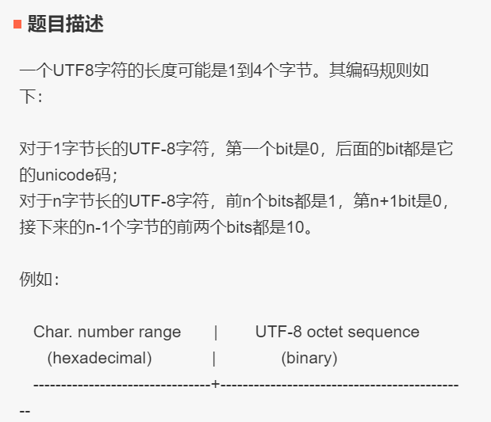
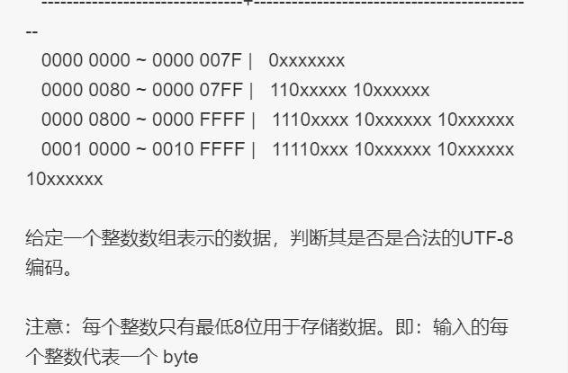
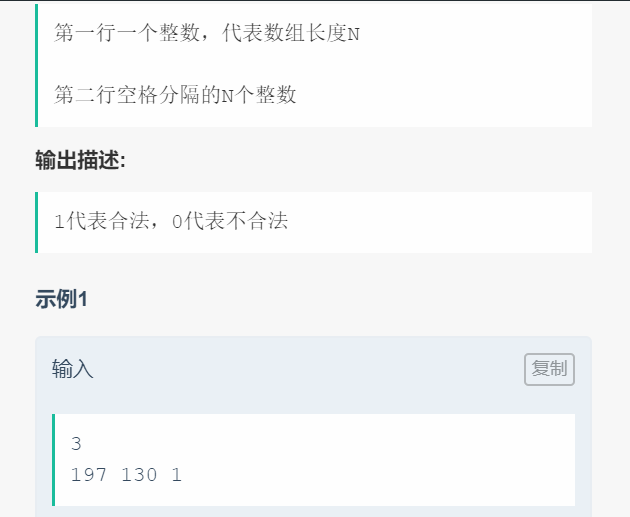
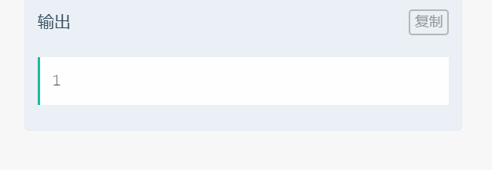

☰ 目录
008 判断是否是utf8编码
链接和考点
| 栏目 |
详细 |
| 今日头条编程测试 |
2018.09.09 |
| 考点 |
char, binary |
| 难度 |
Medi |
题意




上面的示例有错误， 后来更正如下：
示例1
2
197 130
输出：
1
示例2
3
235 140 44
输出：
0
分析
1- 这个题目不太完整， utf-8 可能是1~6字节的， 参考
UTF8是以8bits即1Bytes为编码的最基本单位，当然也可以有基于16bits和32bits的形式，分别称为UTF16和UTF32，但目前用得不多，而UTF8则被广泛应用在文件储存和网络传输中。
编码原理
先看这个模板：
UCS-4 range (hex.) UTF-8 octet sequence (binary)
0000 0000-0000 007F 0xxxxxxx
0000 0080-0000 07FF 110xxxxx 10xxxxxx
0000 0800-0000 FFFF 1110xxxx 10xxxxxx 10xxxxxx
0001 0000-001F FFFF 11110xxx 10xxxxxx 10xxxxxx 10xxxxxx
0020 0000-03FF FFFF 111110xx 10xxxxxx 10xxxxxx 10xxxxxx 10xxxxxx
0400 0000-7FFF FFFF 1111110x 10xxxxxx ... 10xxxxxx
编码步骤：
1) 首先确定需要多少个8bits(octets)
2) 按照上述模板填充每个octets的高位bits
3) 把字符的bits填充至x中，字符顺序：低位→高位，UTF8顺序：最后一个octet的最末位x→第一个octet最高位x
根据UTF8编码,最多可由6个字节组成,所以UTF8是1-6字节编码组成
2- 所以，找到规律，最高字节如果第一位不是0 个1， 就是ASCII 码， 只含有一个字节；
最高字节是2个1的， 表示有 2 个字节， 剩下的字节都是10 开头， 然后依次把数据填入 xxx;
…..
最高字节是6个1的， 表示有 6 个字节;
测试
这个A了？。 事后补充的。
参考答案
#include <iostream>
#include <unordered_map>
#include <vector>
//#include "GlobalHead.h"
#include <vector>
#include <string>
//#include <lcms.h>
typedef unsigned long DWORD;
using namespace std;
int IsTextUTF8(unsigned char * str,long length)
{
int i;
DWORD nBytes=0; // UFT8可用1-6个字节编码,ASCII用一个字节
unsigned char chr;
bool bAllAscii= true; // 如果全部都是ASCII, 说明不是UTF-8
for(i=0;i<length;i++)
{
chr= *(str+i);
if( (chr&0x80) != 0 ) // 判断是否ASCII编码,如果不是,说明有可能是UTF-8,ASCII用7位编码,但用一个字节存,最高位标记为0,o0xxxxxxx
bAllAscii= false;
if(nBytes==0){ // 如果不是ASCII码,应该是多字节符,计算字节数
if(chr>=0x80){
if(chr>=0xFC&&chr<=0xFD)
nBytes=6;
else if(chr>=0xF8)
nBytes=5;
else if(chr>=0xF0)
nBytes=4;
else if(chr>=0xE0)
nBytes=3;
else if(chr>=0xC0)
nBytes=2;
else{
return false;
}
nBytes--;
}
}
else{ //多字节符的非首字节,应为 10xxxxxx
if( (chr&0xC0) != 0x80 )
return false;
nBytes--;
}
}
if( nBytes > 0 ) //违返规则
return false;
if( bAllAscii ) //如果全部都是ASCII, 说明不是UTF-8
return false;
return true;
}
int main() {
int M;
cin >> M;
unsigned char str[M];
for( int i=0; i< M ; i++ ){
int tmp;
cin >> tmp;
str[i] = (unsigned char)tmp;
}
cout << IsTextUTF8(str, M) << endl;
return 0;
}
/*output:
3
235 140 44
0
*/